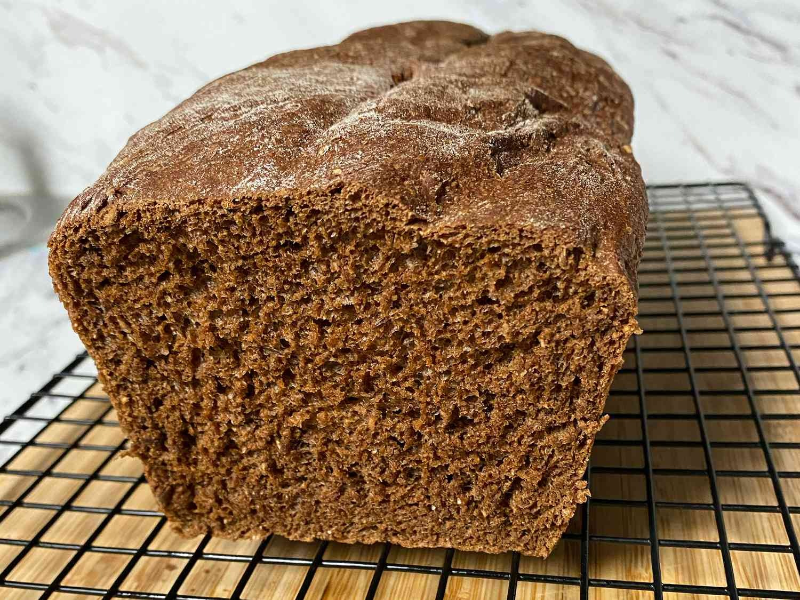

Bread

Ingredients
- 1 ⅛ cups warm water
- 1 ½ tablespoons vegetable oil
- ⅓ cup molasses
- 3 tablespoons cocoa
- 1 tablespoon caraway seed (Optional)
- 1 ½ teaspoons salt
- 1 ½ cups bread flour
- 1 cup rye flour
- 1 cup whole wheat flour
- 1 ½ tablespoons vital wheat gluten (Optional)
- 2 ½ teaspoons bread machine yeast
Steps
- Place ingredients in the pan of the bread machine in
the order recommended by the manufacturer. Select Basic cycle; press Start.